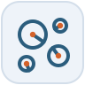
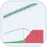
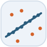
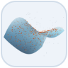
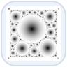

VisualGeometryCore.jl
Geometric primitives, transforms, camera models, coordinate frames and normalization, and the minimal solvers and robust-estimation building blocks the rest of the toolkit shares.
Julia packages for multi-view geometry: primitives, features, robust estimation, RANSAC scoring and evaluation
Nine packages built on one core. An arrow points from a package to a package it depends on (indirect dependencies omitted); dashed nodes are the papers each package accompanies. Click a node to open it.
flowchart TB
LODR@{ img: "icons/lodr.svg", label: "LocalOptimizationDoneRight.jl", pos: "b", w: 72, h: 72, constraint: "on" }
BB@{ img: "icons/blobboards.svg", label: "BlobBoards.jl", pos: "b", w: 72, h: 72, constraint: "on" }
VGEval@{ img: "icons/vgeval.svg", label: "VisualGeometryEval.jl", pos: "b", w: 72, h: 72, constraint: "on" }
PL@{ img: "icons/poselib.svg", label: "PoseLib.jl", pos: "b", w: 72, h: 72, constraint: "on" }
RVG@{ img: "icons/rvg.svg", label: "RobustVisualGeometry.jl", pos: "b", w: 72, h: 72, constraint: "on" }
VGF@{ img: "icons/vgf.svg", label: "VisualGeometryFeatures.jl", pos: "b", w: 72, h: 72, constraint: "on" }
RSDR@{ img: "icons/rsdr.svg", label: "RansacScoringDoneRight.jl", pos: "b", w: 72, h: 72, constraint: "on" }
VGIo@{ img: "icons/vgio.svg", label: "VisualGeometryIo.jl", pos: "b", w: 72, h: 72, constraint: "on" }
VGC@{ img: "icons/vgc.svg", label: "VisualGeometryCore.jl", pos: "b", w: 72, h: 72, constraint: "on" }
P2(["ACCV 2026"])
P3(["BMVC 2026"])
P1(["NeurIPS 2026"])
P2 -.- LODR
P3 -.- BB
P1 -.- RSDR
LODR --> RVG
LODR --> VGEval
LODR --> PL
BB --> RVG
BB --> VGF
BB --> VGIo
VGEval --> VGIo
RVG --> RSDR
PL --> VGC
VGF --> VGC
RSDR --> VGC
VGIo --> VGC
classDef paper stroke-dasharray:4 3
class P1,P2,P3 paper
click VGC href "https://visualgeometrytoolkit.github.io/VisualGeometryCore.jl/" _blank
click VGIo href "https://github.com/VisualGeometryToolkit/VisualGeometryIo.jl" _blank
click VGF href "https://github.com/VisualGeometryToolkit/VisualGeometryFeatures.jl" _blank
click VGEval href "https://github.com/VisualGeometryToolkit/VisualGeometryEval.jl" _blank
click RSDR href "https://ransacscoringdoneright.github.io" _blank
click RVG href "https://visualgeometrytoolkit.github.io/RobustVisualGeometry.jl/" _blank
click PL href "https://github.com/VisualGeometryToolkit/PoseLib.jl" _blank
click LODR href "https://localoptimizationdoneright.github.io" _blank
click BB href "https://blobboards.github.io" _blank
click P1 href "https://arxiv.org/abs/2606.27385" _blank
click P2 href "https://arxiv.org/abs/2610.05743" _blank
click P3 href "https://arxiv.org/abs/2608.28830" _blank
Geometric primitives, transforms, camera models, coordinate frames and normalization, and the minimal solvers and robust-estimation building blocks the rest of the toolkit shares.
Serialization for transforms and cameras: a COLMAP model reader and writer, and a small self-describing JSON schema for named rigid transforms with explicit units.

Feature detection, description and matching: ASIFT detection and nearest-neighbour matching in one KernelAbstractions implementation for the CPU and GPUs.
The shared evaluation base: dataset readers, correspondence pools, statistics and bootstrap intervals, cross-validated tuning and the experiment framework.

Scale-free marginal RANSAC scoring with CPU and GPU evaluators: rank hypotheses without knowing the inlier scale.

Robust estimation for geometric vision: the RANSAC loop, local-optimization engines, and problems for lines, homographies, fundamental and essential matrices and absolute pose.
Julia bindings to the PoseLib C++ library: minimal solvers for relative and absolute pose, homographies and fundamental matrices, and its robust refiners.

The local-optimization evaluation engine: refit, score and compare LO strategies for essential, fundamental and homography estimation under one budget.

Blob marker boards: author printable boards, detect and identify them in images, and estimate their pose from hundreds of blob correspondences.
There is no meta-package: add the package for what you want to do, and its dependencies come with it. The packages require Julia 1.12.
using Pkg
Pkg.add("VisualGeometryCore")using Pkg
Pkg.add("VisualGeometryFeatures")using Pkg
Pkg.add("RobustVisualGeometry")
# brings VisualGeometryCore and RansacScoringDoneRightPkg.add("RansacScoringDoneRight") # NeurIPS 2026
Pkg.add("LocalOptimizationDoneRight") # ACCV 2026
Pkg.add("BlobBoards") # BMVC 2026The packages are being registered in the Julia General registry. Until a package is registered, add it from its GitHub repository: Pkg.add(url = "https://github.com/VisualGeometryToolkit/<Name>.jl").
NeurIPS 2026
ACCV 2026
BMVC 2026